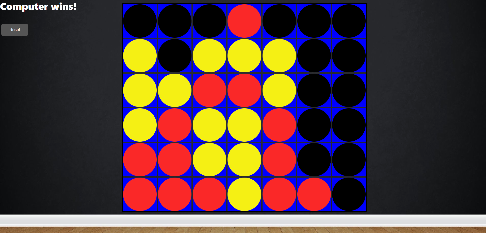

The purpose of this project was twofold. First, I had originally created this in Java using Swing as a kind of capstone project for my associates degree. Second, I wanted to learn some basic TypeScript concepts by trying to implement a project. Player is always red, computer is always yellow. Note that failure to beat the computer requires immediate job offer.
Mini-max is an algorithm that allows a computer to make optimal decisions while playing games. The algorithm uses a tree graph with each node representing a board configuration and each depth $\displaystyle{d}$ representing the state of the game after $\displaystyle{d}$ moves. The branching factor $\displaystyle{b}$ is a number representing how many possible moves there are in a given position. The computer then looks ahead by playing against itself and determines the best move to play.
In order for the computer to understand what a good move is, a "heuristic function" is used to assign a numerical rating to a position. Thankfully, connect-four is a completely solved game, meaning that there exists a strategy for winning every time. Assuming both players play perfectly, the player who opens by placing a piece in the center column will always achieve victory. The heuristic function I chose will always bias the computer towards the center by assigning each each position a priority value.
This initial prioirity can be changed which results in very different behavior. Once a piece is placed, the heuristic function looks at all the pieces, both player and computer, to assign the board a rating. Positive values are assigned to computer moves, and negative values are assigned to player moves. The computer attempts to maximize its own rating while simultaneously minimizing the players rating, thus (usually) picking the optimal move for a given position.
Below is an example of what a mini-max tree could look like after evaluating positions. Source here.
My implementation of mini-max for connect four searches to a depth of 8 and has an average branching factor of 7, since at any position there are 7 possible moves. This means that the worst-case time complexity of the connect-four mini-max is $\displaystyle{O(b^d)}$, which is quite terrible.
In order to cut down on the exponential complexity of mini-max, an additional algorithm called alpha-beta pruning is used try and prevent the computer from searching paths it does not have to. To accomplish this, it keeps track two values, alpha and beta, which initially represent the worst possible score for the maximizing and minimizing players, respectively. These are values are updated during the search until either is gaurunteed a certain score, which happens when beta < alpha for the maximizing player. The computer then need not check any further depth for a node, since the scores cannot change the score it is gaurnteed to have.
With pruning, the mini-max algorithm can achieve a best-case time complexity of $\displaystyle{\sqrt{O(b^d)}}$, which is a dramatic improvement!